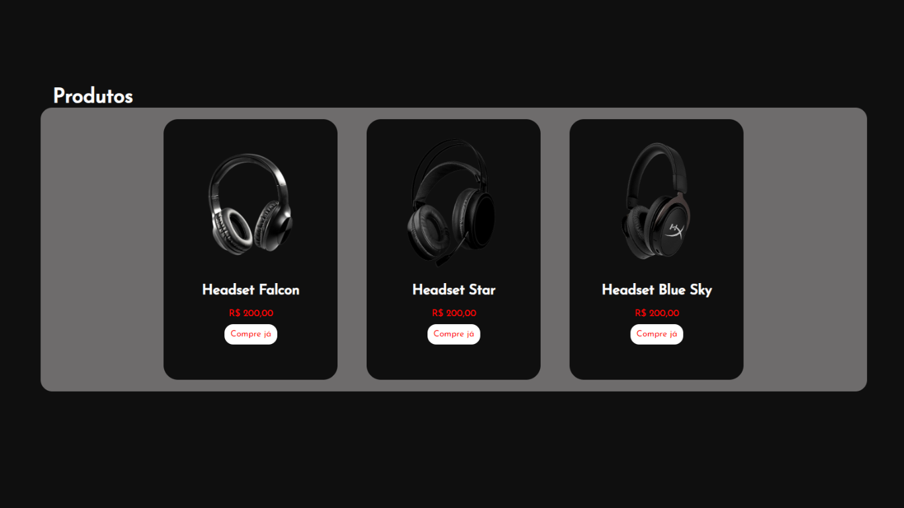
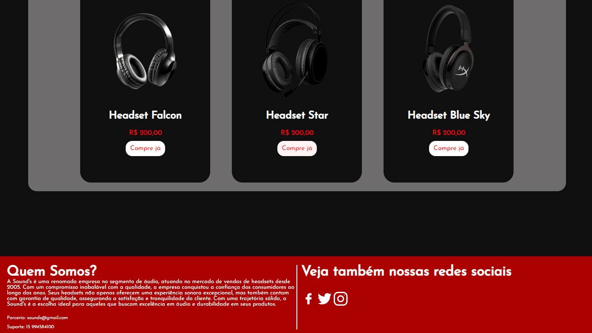

Finalidade do Projeto

Sound's foi um projeto de minha autoria, projetado para servir como uma loja de fones de ouvido, o projeto conta com um início anunciando um novo produto, logo depois aparecem alguns produtos da loja, todos os preços e produtos são fictícios e servem apenas como ilustração, por último é breve comentário explicando sobre a empresa, meios de contato e outras mídias.
Tecnologias Utilizadas
Para a criação do site da Sound's, apenas o design foi necessário. Para o design de componentes e estilo, foi utilizado o Canva e o Figma em conjunto, para que fosse possível desenvolver os elementos gráficos junto com o layout, já para o design na Web, foi utilizado HTML e CSS, para estruturar e estilizar todos os elementos dentro do site, e dar interatividade a alguns elementos.
Considerações Finais
Com o resultado final, o site atendeu o design programado no início, e serve como possibilidade para empresas que querem anunciar seus produtos de forma dinâmica, visual e interativa com o usuário. Além disso, o site contribuiu para o meu autodesenvolvimento como desenvolvedor Web e Front-End.